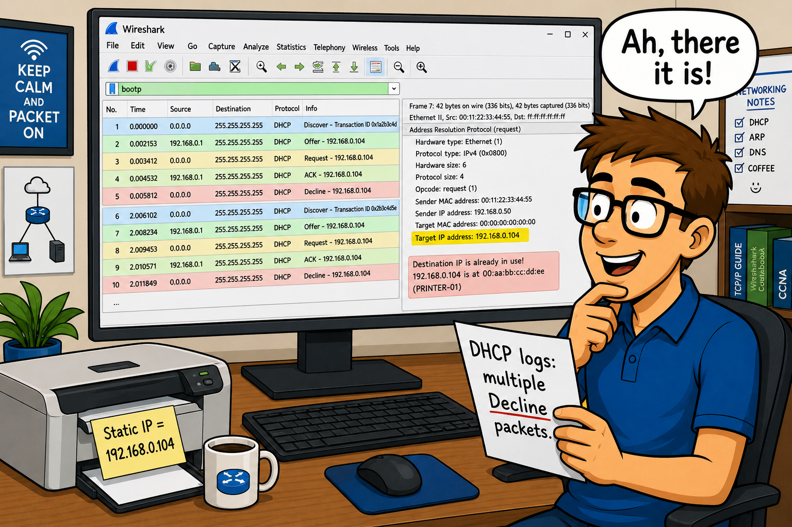

DHCP eliminates the need to manually configure IP addresses, subnet masks, gateways, and DNS servers on every host. But DHCP relies on broadcasts for initial discovery — what happens when a client boots on a different subnet than the DHCP server? What device must be present?
The Purpose of DHCP
There are two flavors of DHCP — DHCPv4 (used on IPv4 networks) and DHCPv6 (used on IPv6 networks). In this chapter we will focus primarily on DHCPv4. DHCPv6 is covered in a dedicated section.
DHCP enables clients to obtain their IP addresses and configuration information in a dynamic manner. Based on BOOTP, DHCP is the standard for address/configuration assignments. DHCP uses UDP for transport offering connectionless services for numerous configuration options. The current definition for DHCP on IPv4 networks is RFC 2131.
The default ports for DHCP communications are port 68 (client process) and port 67 (server daemon).
- Type 1 (Discover): Client broadcast to locate available DHCP servers
- Type 2 (Offer): Server to client with offer of configuration parameters
- Type 3 (Request): Client requesting offered parameters or confirming address
- Type 4 (Decline): Client indicating the offered address is not acceptable (duplicate address test failed)
- Type 5 (Acknowledgment): Server to client with configuration parameters
- Type 6 (NAK): Server indicating client's network address is incorrect
- Type 7 (Release): Client relinquishing address and cancelling remaining lease
- Type 8 (Inform): Client asking only for local configuration parameters; client already has IP address
A DHCP client that boots up OUTSIDE its lease time performs a four-packet DORA process. A client that boots up INSIDE its lease time only performs two packets. What are those two packets and why can it skip Discover and Offer?
Analyze Normal DHCP Traffic
DHCP DORA Process
When a DHCP client is outside its address lease time, it performs the four-packet DORA sequence:
- Discover (Type 1): Broadcast from client to locate DHCP servers. Source: 0.0.0.0. Destination: 255.255.255.255.
- Offer (Type 2): Unicast or broadcast from server offering an IP address and configuration.
- Request (Type 3): Broadcast from client selecting one server's offer and confirming parameters.
- Acknowledgment (Type 5): Server confirms the address assignment. Client enters the Bound state.
When a client is INSIDE its lease time, it only sends Request and receives ACK or NAK.
Three Time Values
During the address assignment, the client obtains three time values:
- Lease Time (LT): How long the client can use the assigned address
- Renewal Time (T1): 0.5 × LT — client sends unicast Request to original server to extend lease
- Rebind Time (T2): 0.875 × LT — if renewal fails, client sends broadcast Request to any server
If no acknowledgment before LT expires, the client must release its IP address and start over with DORA.
Most DHCP client software uses a 'sticky IP address' — the client system remembers the last assigned IP address and requests to explicitly use that address again during Discover and Request packets. Dynamic IP addressing is not as dynamic as the name implies! A client will typically request the same address it used before.
A DHCP Relay Agent (IP Helper) forwards DHCP broadcasts as unicast packets to a remote DHCP server. When you see a DHCP packet that has come through a relay agent, what field in the DHCP packet identifies the relay agent's IP? How can you use this to identify which subnet the client belongs to?
DHCP Relay Agents
Since DHCP relies on broadcasts for the initial DHCP Discover process, either the DHCP server or a DHCP Relay Agent must be on the same network segment as the DHCP client.
DHCP Relay Agents forward messages between DHCP clients and DHCP servers. The DHCP Relay Agent's IP address is listed in the DHCP Request packet. The MAC address of the DHCP client is listed in the Client MAC address field. If you examine the Ethernet header of a relayed DHCP packet, you will notice it is coming from a router/switch that has the DHCP Relay Agent functionality enabled.
Compare the source MAC address in the Ethernet header with the Client MAC Address field inside the DHCP packet. If they differ, the packet came through a relay agent. The Relay Agent IP Address (giaddr) field shows which router interface forwarded the broadcast. Filter: bootp.ip.relay!=0.0.0.0
A DHCP client receives an Offer from the server, sends a Request, receives an ACK, and then sends a Decline. What does this sequence mean? What is the client doing between the ACK and the Decline? How could a printer cause this problem?
Analyze DHCP Problems
If DHCP doesn't work properly, clients may not be able to obtain or maintain IP addresses. Common problems include address conflicts, server unavailability, and misconfigured scopes.
Address Decline Problem
The DHCP Decline problem occurs when a client discovers the offered IP address is already in use. The sequence:
- Client sends DHCP Discover
- Server sends DHCP Offer with an IP address
- Client sends DHCP Request accepting the offer
- Server sends DHCP ACK confirming the address
- Client performs duplicate address test (gratuitous ARP or ping)
- Another host responds — address is already in use
- Client sends DHCP Decline (Type 4) back to server
If you apply a capture filter for port 67 only, you will MISS the duplicate address test (ARP or ICMP) that occurs between the ACK and Decline. The book's case study illustrates this perfectly — they only captured port 67 and 68, missing the ARP test entirely. Use display filters instead of capture filters for DHCP troubleshooting so you can see ALL related traffic.
- Client gets no response to Discover — no DHCP server on segment and no relay agent
- Client declines offer — duplicate address conflict (statically-assigned device)
- Client in rebind state — original DHCP server unreachable during renewal window
- NAK received — client moved to different subnet, address is wrong scope
- Address pool exhausted — server sends NAK to all requests
DHCP packets are variable length. The Client MAC Address field inside the DHCP packet serves a specific purpose different from the Ethernet source MAC. What is it? And what is the Magic Cookie field?
Dissect the DHCP Packet Structure
DHCP packets are variable length. Key DHCP header fields:
- Message Type (Opcode): 1 = DHCP request, 2 = DHCP reply
- Hardware Type: Type of hardware address (0x0001 = Ethernet)
- Hardware Length: Length of hardware address (6 for Ethernet)
- Hops: Number of relay agents the packet has crossed
- Transaction ID: Matches request and response packets
- Seconds Elapsed: Time since client began requesting a new address
- BOOTP Flags: Indicates whether client accepts unicast or broadcast MAC packets
- Client IP Address: Filled in by client after it is assigned by the server
- Your (Client) IP Address: The address offered by the DHCP server (only DHCP server fills this)
- Next Server IP Address: DHCP server address when a relay agent is used
- Relay Agent IP Address: Shows relay agent's IP if one is in use
- Client MAC Address: Always contains the actual client's MAC address (unchanged through relays)
- Server Host Name: Optional server name
- Boot File Name: Optional boot file path
- Magic Cookie: 0x63825363 — indicates data is DHCP not BOOTP
- Options: Variable-length field carrying IP address, configuration, etc. Common options: 1=Subnet Mask, 3=Router, 5=Name Server, 6=Domain Server, 12=Host Name, 15=Domain Name, 51=Lease Time, 53=Message Type, 55=Parameter Request List
The BOOTP-DHCP statistics window (Statistics | BOOTP-DHCP) summarizes the DHCPv4 message types in the trace file. This is useful for a quick overview of what types of DHCP messages are present. Note: as of Wireshark 1.7.2, this feature does not support DHCPv6.
DHCPv6 is defined in RFC 3315. Unlike DHCPv4 which uses broadcasts, DHCPv6 uses multicast. What specific multicast address do DHCPv6 clients use to contact servers? And what is the port range for DHCPv6 (hint: it's different from DHCPv4)?
An Introduction to DHCPv6
DHCPv6 is defined in RFC 3315. Since IPv6 does not use broadcasts, DHCPv6 clients can use the multicast address for All_DHCP_Relay_Agents_and_Servers (ff02::1:2) to locate DHCPv6 servers and relay agents.
The DHCPv6 client port is 546 and the DHCPv6 server port is 547.
The basic DHCPv6 communication sequence:
- Solicit — DHCPv6 client to locate a DHCPv6 server; sent to ff02::1:2
- Advertise — One or more DHCPv6 servers provide the client with address and configuration
- Request — DHCPv6 client confirms the address assignment
- Reply — DHCPv6 server with confirmation
DHCPv6 has no relationship to BOOTP. The display filter string is simply dhcpv6. To filter for a specific message type: dhcpv6.msgtype==9 (Decline). To filter for Solicit messages from a specific MAC: (eth.src==21:22:23:24:25:26) && (dhcpv6.msgtype==1).
Filter on DHCP/DHCPv6 Traffic — Case Study
Capture filter for DHCPv4: port 67. Capture filter for DHCPv6: port 546. DHCPv4 is derived from BOOTP and uses the bootp display filter string. DHCPv6 display filter: dhcpv6.
bootp.option.value==4 — DHCPv4 Decline
bootp.hw.mac_addr==00:1b:9e:70:10:42 — DHCP message from specific client MAC
bootp.option.type==12 — DHCP message contains hostname (option 12)
bootp.ip.relay!=0.0.0.0 — Message contains DHCP Relay Agent value
(bootp.ip.your==192.168.0.104) && (bootp.option.value==05) — ACK to client 192.168.0.104
dhcpv6.msgtype==9 — DHCPv6 Decline
Case Study: Declining Clients

A customer hit a problem where suddenly a number of hosts could not communicate on the Internet. A quick look at the local configurations confirmed that they did not have an IP address assigned.
So obviously something went wrong with the DHCP process, but the DHCP server seemed to be running fine. We launched Wireshark with a capture filter for all DHCP traffic (port 67 or port 68).
The trace file showed that the clients booted up and sent the DHCP Discover packet and received an offer. We noticed that the server wasn't offering the same IP address requested by the client, but we assumed that the requested address was already assigned.
The client requested 192.168.0.102, but the server offered 192.168.0.104. The client sent the request for that address and an ACK finished the DHCP startup process — so far, so good.
Then... approximately one second later, the client sent a Decline to the DHCP server. Why?
This taught us a valuable lesson — DON'T use capture filters when troubleshooting the boot up process. We totally missed the problem. When we took the trace again without the capture filter we saw the client perform a ping to the offered address immediately after being offered 192.168.0.104.
To our surprise the ping to 192.168.0.104 was answered by a printer. We learned that the printer's IP address had been assigned statically. The DHCP server never checked to see if an address was in use by performing its own ping process.
The IT staff reconfigured the DHCP server with static entries for the printers. Never again has the DHCP server offered those addresses to the clients on the network.
TL;DR — Chapter 22
DHCP can be used to provide more configuration settings than just the client IP address, although that is the most common use of DHCP.
When a client boots up outside of its lease time, we see a four packet DHCP process — Discover, Offer, Request and Acknowledge. When a client boots up inside its lease time, we see a two packet DHCP process — Request and Acknowledge. Clients can request their last used IP address in their DHCP Discover or Request packets.
Packets sent from IP address 0.0.0.0 are typically DHCP Discover packets. The sender does not have an IP address at that time. These packets are sent to the broadcast address (255.255.255.255).
If a DHCP server is not on the local network, a DHCP relay agent is required to forward DHCP requests to the remote DHCP server.
DHCP for IPv4 networks (DHCPv4) is based on BOOTP; DHCPv6 is not. DHCP uses ports 67 and 68; DHCPv6 uses ports 546 and 547.